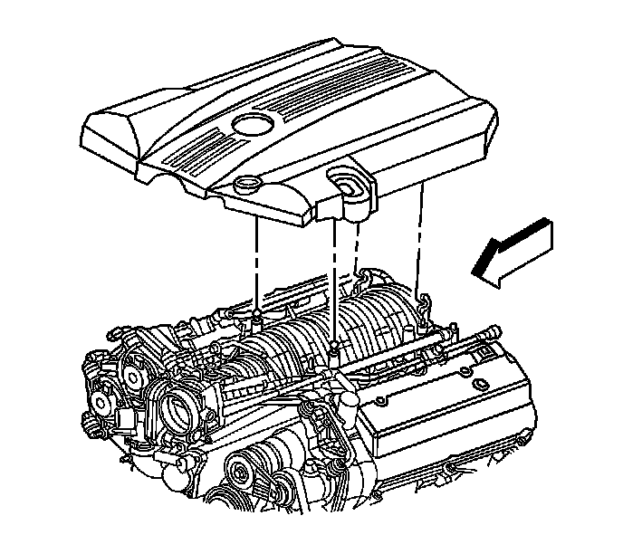
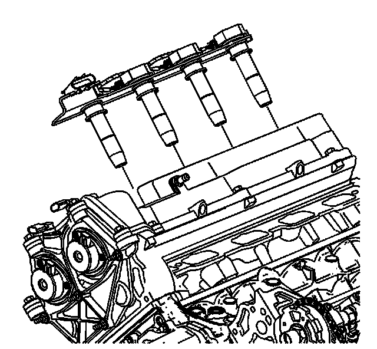
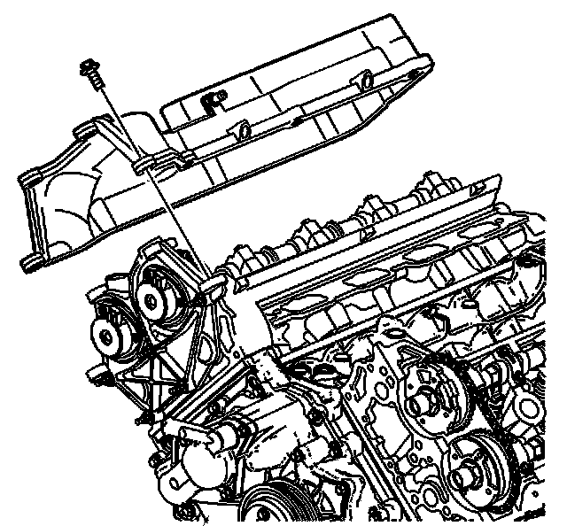
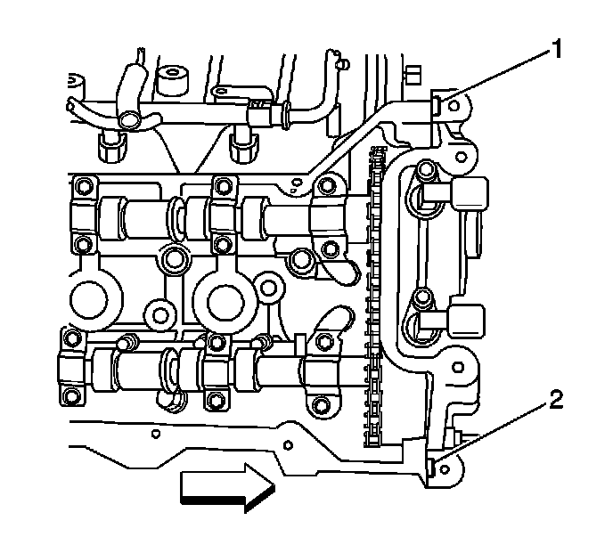

Camshaft Cover Replacement - Right Side
Camshaft Cover Replacement - Right Side
Removal Procedure

1. Remove the fuel injector sight shield. Refer to Fuel Injector Sight Shield Replacement (Service and Repair) .
2. Remove the battery tray assembly. Refer to Battery Tray Replacement (LHD) (Battery Tray Replacement (LHD))Battery Tray Replacement (RHD) (Battery Tray Replacement (RHD)) .

3. Disconnect the positive crankcase ventilation (PCV) dirty air tube from the camshaft cover.
4. Raise and support the vehicle. Refer to Lifting and Jacking the Vehicle (Service and Repair) .

5. Remove the bolts securing the wiring harness bracket to the right cylinder head.
6. Remove the right side engine mount nut. Refer to Engine Mount Replacement - Right Side (w/RWD) (Service and Repair)Engine Mount Replacement - Right Side (w/AWD) (Service and Repair) .
7. Disconnect the wire harness retainers from the generator housing.
8. Lower the vehicle.

9. Remove the bank 1 ignition coils. Refer to Ignition Coil Replacement - Bank 1 (Service and Repair) .
10. Disconnect the cable harness clips at the front of the camshaft cover and position the cable harness aside.
11. Disconnect the transmission control module (TCM) electrical connector. Refer to Transmission Control Module Replacement (5L40-E/5L50-E - Automatic Transmission) .
12. Disconnect the C101 and C105 electrical connectors and position the electrical wiring harness aside. Refer to Harness Routing Views (LHD) (Harness Routing Views (LHD))Harness Routing Views (RHD) (Harness Routing Views (RHD)) .
13. Remove the bank 1 intake and exhaust camshaft position sensors. Refer to Camshaft Position Sensor Replacement - Bank 1 (Right Side) Intake (Service and Repair) and Camshaft Position Sensor Replacement - Bank 1 (Right Side) Exhaust (Service and Repair) .

14. Place a suitable floor jack with a block of wood under the oil pan and carefully raise the right side of the engine.
15. Remove the bolt connecting the ground strap to the right camshaft cover.

16. Remove the camshaft cover bolts.
17. Remove the camshaft cover.
18. Discard the camshaft cover gasket, spark plug port seals, and mounting bolt grommets if there is any evidence of damage or if the camshaft cover gasket comes out of the groove in the cover during removal.
19. Clean and inspect the camshaft cover. Refer to Camshaft Cover Cleaning and Inspection () .
Installation Procedure

Important: Be careful to prevent the exposed section of the camshaft cover seal from being damaged by the edge of the cylinder head casting.
1. Install the camshaft cover gasket, the spark plug seals, and the mounting bolt grommets to the camshaft cover as required.
2. Clean the cylinder head to camshaft cover mating surface.
3. Place a small amount of sealant at the split line (1, 2) of the right cylinder head and the right camshaft position actuator housing. Refer to Sealers, Adhesives, and Lubricants (Specifications) .
4. Install the camshaft cover. Ensure the camshaft cover gasket is in the proper position.
Notice: Refer to Fastener Notice (Fastener Notice) .
5. Install the camshaft cover bolts installing the ground strap to the camshaft cover.
Tighten the bolts to 10 N.m (89 lb in).
6. Lower the engine and remove the floor jack and block of wood.
7. Install the bank 1 intake and exhaust camshaft position sensors. Refer to Camshaft Position Sensor Replacement - Bank 1 (Right Side) Intake (Service and Repair) and Camshaft Position Sensor Replacement - Bank 1 (Right Side) Exhaust (Service and Repair) .
8. Connect the C101 and C105 electrical connectors. Refer to Harness Routing Views (LHD) (Harness Routing Views (LHD))Harness Routing Views (RHD) (Harness Routing Views (RHD)) .
9. Connect the TCM electrical connector. Refer to Transmission Control Module Replacement (5L40-E/5L50-E - Automatic Transmission) .
10. Connect the cable harness clips.
11. Install the bank 1 ignition coil. Refer to Ignition Coil Replacement - Bank 1 (Service and Repair) .
12. Raise the vehicle. Refer to Lifting and Jacking the Vehicle (Service and Repair) .
13. Connect the wire harness retainers to the generator housing.
14. Install the right side engine mount nut. Refer to Engine Mount Replacement - Right Side (w/RWD) (Service and Repair)Engine Mount Replacement - Right Side (w/AWD) (Service and Repair) .
15. Install the bolts securing the wiring harness bracket to the right cylinder head.
Tighten the bolt to 45 N.m (33 lb ft).
16. Connect the PCV dirty air tube to the camshaft cover.
17. Install the fuel injector sight shield. Refer to Fuel Injector Sight Shield Replacement (Service and Repair) .